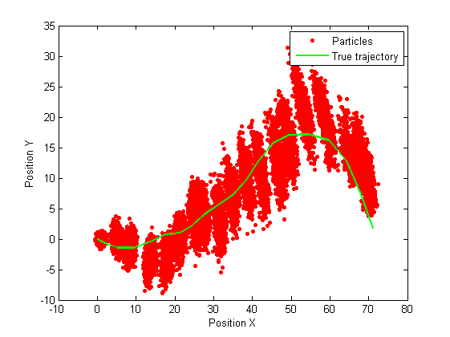
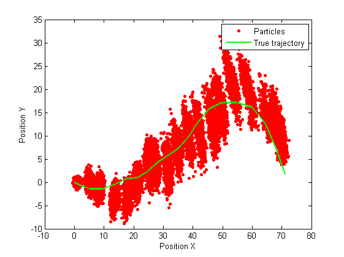

Matbiips example: Object tracking
In this example, we consider the tracking of an object in 2D, observed by a radar.
Contents
Statistical model in BUGS language
var v_true[2,t_max-1], x_true[4,t_max], x_radar_true[2,t_max], v[2,t_max-1], x[4,t_max], x_radar[2,t_max], y[2,t_max]
data
{
x_true[,1] ~ dmnorm(mean_x_init, prec_x_init)
x_radar_true[,1] <- x_true[1:2,1] - x_pos
mu_y_true[1,1] <- sqrt(x_radar_true[1,1]^2+x_radar_true[2,1]^2)
mu_y_true[2,1] <- arctan(x_radar_true[2,1]/x_radar_true[1,1])
y[,1] ~ dmnorm(mu_y_true[,1], prec_y) for (t in 2:t_max)
{
v_true[,t-1] ~ dmnorm(mean_v, prec_v)
x_true[,t] <- F %*% x_true[,t-1] + G %*% v_true[,t-1]
x_radar_true[,t] <- x_true[1:2,t] - x_pos
mu_y_true[1,t] <- sqrt(x_radar_true[1,t]^2+x_radar_true[2,t]^2)
mu_y_true[2,t] <- arctan(x_radar_true[2,t]/x_radar_true[1,t])
y[,t] ~ dmnorm(mu_y_true[,t], prec_y)
}
} model
{
x[,1] ~ dmnorm(mean_x_init, prec_x_init)
x_radar[,1] <- x[1:2,1] - x_pos
mu_y[1,1] <- sqrt(x_radar[1,1]^2+x_radar[2,1]^2)
mu_y[2,1] <- arctan(x_radar[2,1]/x_radar[1,1])
y[,1] ~ dmnorm(mu_y[,1], prec_y) for (t in 2:t_max)
{
v[,t-1] ~ dmnorm(mean_v, prec_v)
x[,t] <- F %*% x[,t-1] + G %*% v[,t-1]
x_radar[,t] <- x[1:2,t] - x_pos
mu_y[1,t] <- sqrt(x_radar[1,t]^2+x_radar[2,t]^2)
mu_y[2,t] <- arctan(x_radar[2,t]/x_radar[1,t])
y[,t] ~ dmnorm(mu_y[,t], prec_y)
}
}Installation of Matbiips
Unzip the Matbiips archive in some folder and add the Matbiips folder to the Matlab path
matbiips_path = '..\..\matbiips\matlab';
addpath(matbiips_path)
Load model and data
Model parameters
t_max = 20;
mean_x_init = [0 0 1 0]';
prec_x_init = diag(1000*ones(4,1));
x_pos = [-10 0];
mean_v = zeros(2, 1);
prec_v = diag(1*ones(2,1));
prec_y = diag([100 500]);
delta_t = 1;
F =[1 0 delta_t 0
0 1 0 delta_t
0, 0, 1, 0
0 0 0 1];
G = [ delta_t.^2/2 0
0 delta_t.^2/2
delta_t 0
0 delta_t];
data = struct('t_max', t_max, 'mean_x_init', mean_x_init, 'prec_x_init', ...
prec_x_init, 'x_pos', x_pos, 'mean_v', mean_v, 'prec_v', prec_v,...
'prec_y', prec_y, 'delta_t', delta_t, 'F', F, 'G', G);
Start BiiPS console
biips_init;
Compile BUGS model and sample data
sample_data = true; % Boolean [model_id, data] = biips_model('hmm_4d_nonlin_tracking.bug', data, 'sample_data', sample_data); x_pos_true = data.x_true(1:2,:);
* Parsing model in: hmm_4d_nonlin_tracking.bug * Compiling data graph Declaring variables Resolving undeclared variables Allocating nodes Graph size: 328 Sampling data Reading data back into data table * Compiling model graph Declaring variables Resolving undeclared variables Allocating nodes Graph size: 332
BiiPS: Particle filter
Parameters of the algorithm.
n_part = 1000; % Number of particles variables = {'x'}; % Variables to be monitored
Run SMC
out_smc = biips_smc_samples(model_id, {'x'}, n_part);
* Assigning node samplers * Running SMC forward sampler with 1000 particles |--------------------------------------------------| 100% |**************************************************| 20 iterations in 1.19 s
Summary statistics
summary = biips_summary(out_smc);
Plot estimates
x_f_mean = summary.x.f.mean; x_s_mean = summary.x.s.mean; figure('name', 'Filtering and Smoothing estimates') plot(x_f_mean(1, :), x_f_mean(2, :), 'linewidth', 2) hold on plot(x_s_mean(1, :), x_s_mean(2, :), 'r', 'linewidth', 2) plot(x_pos_true(1,:), x_pos_true(2,:), 'g', 'linewidth', 2) legend('Filtering estimate', 'Smoothing estimate', 'True trajectory') xlabel('Position X') ylabel('Position Y') figure('name', 'Particles') plot(out_smc.x.f.values(1,:), out_smc.x.f.values(2,:), 'ro', ... 'markersize', 3, 'markerfacecolor', 'r') hold on plot(x_pos_true(1,:), x_pos_true(2,:), 'g', 'linewidth', 2) legend('Particles', 'True trajectory') xlabel('Position X') ylabel('Position Y')
 
